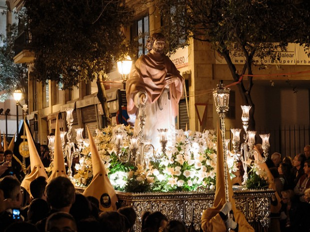
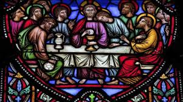
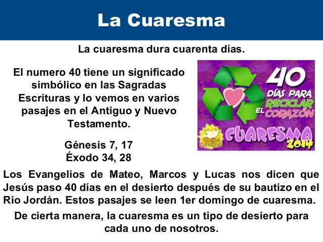
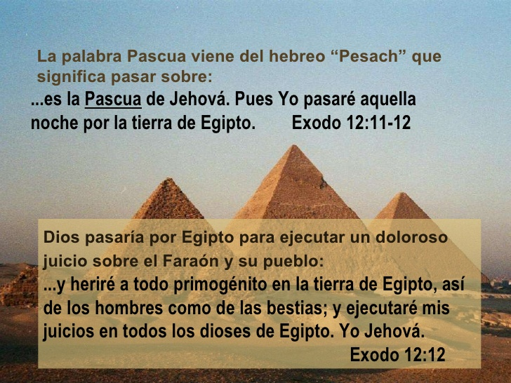
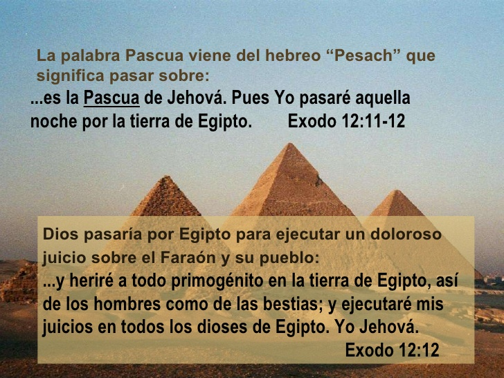
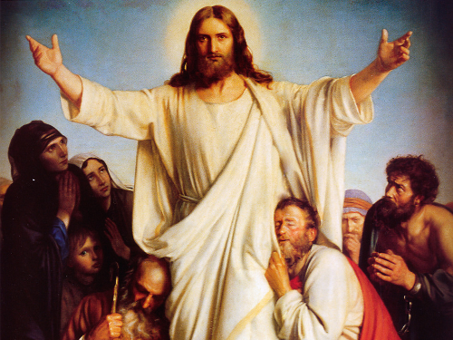

Semana Santa
-
Iztapalapa
-
Vaticano
-
Jerusalem
-
Ciudad Juárez
Significado de la semana santa
Semana Santa, conocida como semana mayor, es un período de 7 días que comienza con el Domingo de Ramos y culmina con el Domingo de Resurrección. Con la Semana Santa, el cristiano conmemora el Triduo Pascual, es decir, los momentos de la Pasión, la Muerte y la Resurrección de Jesucristo.
La Semana Santa está precedida por la Cuaresma que se refiere al tiempo de preparación donde se recuerda los 40 días de Jesucristo en el desierto. Las celebraciones centrales de la Semana Santa son: Jueves Santo, Viernes Santo, Sábado Santo y Domingo de Resurrección.
La Semana Santa, es el tiempo para dedicarse a la oración y reflexionar en Jesucristo, en los momentos del Triduo Pascual, quien con su infinita misericordia, decide tomar el lugar del hombre y recibir el castigo para liberarlo de los pecados. Asimismo, es el tiempo ideal para el ser humano meditar sobre sus acciones y los cambios que debe realizar para acercarse más a Dios y cumplir con sus mandamientos.
 

Domingo de pascua
El Domingo de Resurrección o de Pascua es la fiesta más importante para todos los católicos, ya que con la Resurrección de Jesús es cuando adquiere sentido toda nuestra religión. Cristo triunfó sobre la muerte y con esto nos abrió las puertas del Cielo. En la Misa dominical recordamos de una manera especial esta gran alegría. Se enciende el Cirio Pascual que representa la luz de Cristo resucitado y que permanecerá prendido hasta el día de la Ascensión, cuando Jesús sube al Cielo. La Resurrección de Jesús es un hecho histórico, cuyas pruebas entre otras, son el sepulcro vacío y las numerosas apariciones de Jesucristo a sus apóstoles. Cuando celebramos la Resurrección de Cristo, estamos celebrando también nuestra propia liberación. Celebramos la derrota del pecado y de la muerte. En la resurrección encontramos la clave de la esperanza cristiana: si Jesús está vivo y está junto a nosotros, ¿qué podemos temer?, ¿qué nos puede preocupar?
¿Cómo se establece la semana santa?
Probablemente usted habrá notado que la fecha de la Semana Santa varía considerablemente de un año al siguiente. Esta fecha se escoge a partir de una fórmula establecida por el Emperador Romano Constantino el Grande y el Concilio de Nicea en 325 d. C. Usted puede usar la fórmula para verificar la fecha de Pascua cada año. En primer lugar debe hallar el equinoccio vernal, o primer día de primavera ( alrededor del 21- 22 de marzo ), en un calendario que incluya datos astronómicos básicos. Después busque la siguiente luna llena, normalmente está indicada en una esquina del calendario. La Semana Santa caerá el domingo siguiente. De acuerdo con esta regla, la fecha más tardía posible para Semana Santa sería el 25 de Abril, la próxima ocurrencia será en 2038. La más temprana el 22 de Marzo, en 2285. La mayoría de las veces, la Semana Santa cae durante la primera semana de Abril.
Celebración en Atlixco
Durante la temporada vacacional de Semana Santa que se lleva a cabo en el municipio de Atlixco, el alcalde Ricardo Camacho Corripio dio a conocer las tradiciones de fe que distinguen a la entidad que, aunado a los diversos atractivos que la región ofrece, permitirá atraer más de 80 mil visitantes en estos días. Lo anterior representa un impacto en la economía de las familias de la entidad —de manera directa e indirecta— pues se calcula se tenga una derrama económica mayor a los 20 millones de pesos.
“Entre las tradiciones que han distinguido a Atlixco es la ‘Procesión del Silencio’ en la comunidad de Nexatengo, la cual es realizada por la cofradía de Nazarenos de la entidad y la ‘Procesión de Engrillados’. Cabe mencionar que ambos eventos son actos de penitencia, fe y de arrepentimiento, mismos que se realizarán el próximo 6 de abril a partir de la seis de la mañana en Santa Lucía Cosamaloapan”, refirió el alcalde.
Cabe precisar que en la “Procesión de los Engrillados” los participantes se caracterizan por vestir de luto y portar pesadas cadenas de aproximadamente 60 kilos, además de ponerse espinas en el cuerpo. Ellos recorren las principales calle de la ciudad y tienen una preparación, tanto espiritual como física de dos meses. Se realizará también el viernes 6 de abril.